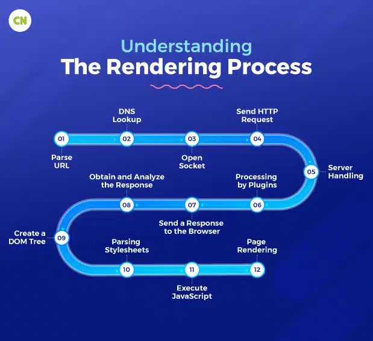

Web Browser
Category: Client-Side Software
Definition
A Web Browser is a software application used to access and view websites on the World Wide Web. It acts as the Client in the Client-Server model.
Functionality
The browser’s main job is to retrieve resources (like HTML, CSS, and Images) from a server and render them into a human-readable format. Key functions include:
- Requesting: Sending HTTP requests to a server via a URL.
- Rendering: Using a "Rendering Engine" to interpret HTML/CSS code and display the layout.
- Interactivity: Executing JavaScript to make the page dynamic.
How the Browser Works
Modern browsers use a complex process to turn code into the visual pages we interact with. This involves parsing the HTML for structure and the CSS for styling.

Common Examples
Modern browsers include Google Chrome, Mozilla Firefox, Apple Safari, and Microsoft Edge. While they all aim to display the web the same way, they sometimes use different engines (like Blink or WebKit) to do so.